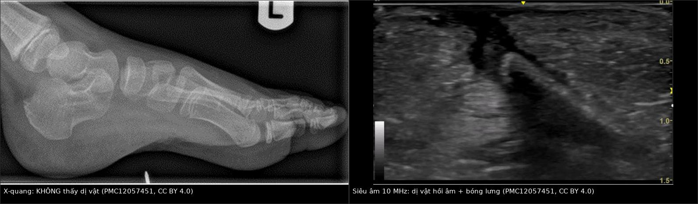
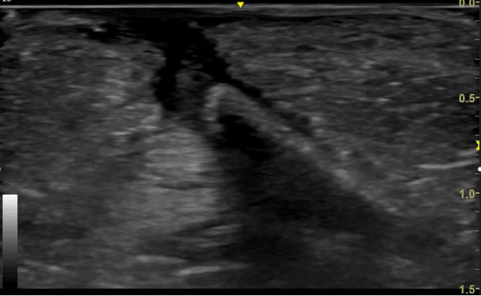
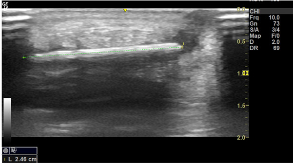
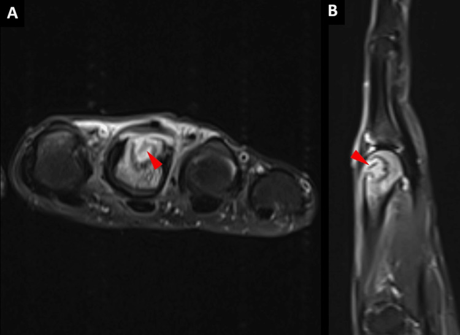

3844 — Dị vật sót trong mô mềm chi (gỗ, gai, kính, nhựa) / Retained soft-tissue foreign body of the limb
Tags: pattern:di-vat pattern:duong-hong-sieu-am vung:mo-mem vung:chi-duoi protocol:sieu-am-mo-mem
Mức chắc chắn (certainty): tổng hợp y văn (literature synthesis) — biên từ nghiên cứu 51 ca dị vật cản quang kém có X-quang âm tính (Indian J Radiol Imaging 2014, PMC4094976), tổng quan POCUS 2025 (POCUS J, PMC12057451, CC BY 4.0), cẩm nang kỹ thuật siêu âm dị vật (J Clin Ultrasound 2020, PMC7754500) và các ca có ảnh minh họa (PMC13728522, PMC13354026, PMC13470597 — đều CC BY). Nhóm không có bệnh nhân của mình.
Câu chốt: X-quang âm tính KHÔNG loại trừ dị vật. Gỗ, gai, nhựa, vỏ cây có số nguyên tử hiệu dụng gần mô mềm nên gần như không tạo tương phản tia X — một nghiên cứu kinh điển cho thấy 86% dị vật gỗ có X-quang âm tính dù lấy ra được. Siêu âm tần số cao (7–18 MHz) là đầu tay cho vật cản quang kém: dị vật hiện là đường hồi âm dày (hyperechoic) kèm bóng lưng (posterior shadowing), xung quanh là quầng giảm âm do viêm hạt/mủ. Kính, kim loại, sỏi thì cản quang — X-quang/CT hợp lý hơn. Bẫy chết người: vật hồi âm mạnh bị đọc là "khí trong mô", và siêu âm âm tính vẫn không phải bằng chứng loại trừ.
1. Tổng quan bệnh học – cơ chế hình ảnh (TẠI SAO)
1.1 Vì sao gỗ "vô hình" trên X-quang — vật lý, không phải "máy kém"
- Tương phản tia X phụ thuộc số nguyên tử hiệu dụng (Z_eff) và mật độ điện tử. Mô mềm có Z_eff ≈ 7,4 (C, H, O, N). Cellulose của gỗ (C₆H₁₀O₅) có Z_eff ≈ 6,7–7,4 — gần như trùng mô mềm, hiệu số suy giảm < 5% → nằm dưới ngưỡng tương phản của detector phim/CR, không thấy được.
- Thủy tinh chứa Si, Na, Ca (và chì ở thủy tinh pha lê) → cản quang rõ; kim loại cản quang rất mạnh. Vì vậy "dị vật" không phải một bệnh cảnh hình ảnh duy nhất — phải hỏi vật liệu gì trước khi chọn modality.
- Nước và thời gian làm gỗ "đổi tính": gỗ khô có đậm độ rất thấp, gần mức khí; khi ngấm dịch thì đậm độ tăng dần theo thời gian — cùng một mảnh gỗ có thể giống khí ở ngày đầu và giống mô mềm về sau. Vì vậy trên CT, gỗ là cấu trúc đậm độ thấp dễ bị đọc là "bọt khí trong áp-xe", và phải hạ cửa sổ xuống mức phổi (−270 đến −300 HU) mới thấy rõ (PMC12332695; BMJ Case Rep 2024, PMC10859975). Ngưỡng HU chính xác theo thời gian chưa có trong nguồn đã đọc — ghi "chưa rõ", cần tra thêm.
1.2 Vì sao siêu âm thấy được — trở kháng âm học, không phải "vật sáng"
- Trở kháng âm (acoustic impedance, Z = ρ·c): mô mềm ~1,5 MRayl, gỗ cao hơn mô mềm, không khí ~0,0004 MRayl. Chênh trở kháng gỗ–mô mềm đủ lớn để phản xạ mạnh → hồi âm mạnh; kim loại phản xạ gần như toàn phần → hồi âm cực mạnh + chuỗi đuôi sao (comet tail).
- Bóng lưng (posterior acoustic shadowing): gỗ/kim loại hấp thụ và phản xạ gần hết năng lượng → vùng sau dị vật tối đen. Dị vật mềm, mủn (gỗ mục, lá) có thể không tạo bóng rõ → âm tính giả.
- Viền giảm âm quanh dị vật = viêm hạt (granulation tissue) và mủ — dấu gián tiếp rất giá trị, xuất hiện sau vài ngày đến vài tuần; phù mô mềm xung quanh tạo hình "cobblestoning" (PMC13728522, Hình 2).
- Tần số quyết định độ phân giải: đầu dò linear 7–18 MHz phát hiện được dị vật 0,5 mm đến > 10 mm ở độ sâu vài cm; dị vật sâu > 3–4 cm cần đầu dò 5–12 MHz hoặc đệm nước (standoff/water bath) (PMC7754500).
1.3 Vì sao dị vật bị bỏ sót — 3 cơ chế lâm sàng
- Vết thương nhỏ, tự lành: vết chích 2–3 mm đóng lại trong vài ngày; bệnh nhân quên hoặc không biết mình giẫm phải.
- X-quang được coi là "đã loại trừ": với gỗ/gai/nhựa, X-quang âm tính là quy luật, không phải ngoại lệ (PMC12057451).
- Diễn tiến âm thầm: dị vật tồn tại nhiều tháng đến nhiều năm, biểu hiện bằng sưng mạn, nốt dưới da, rò dịch tái phát, viêm gân bao hoạt dịch, viêm xương tủy → bị chẩn đoán là "viêm mô tế bào mạn", "u mô mềm", "viêm gân vô căn". Có ca giữ dị vật gỗ trong bàn chân 30 năm, ca mảnh gỗ trong khớp gối gây tràn dịch tái phát.
1.4 Số phải nhớ
- X-quang với dị vật gỗ: âm tính 86% (nghiên cứu 1982, dẫn trong PMC12057451).
- Siêu âm: nghiên cứu 51 ca dị vật cản quang kém + X-quang âm tính, đầu dò 12 MHz: độ nhạy 97,9%, độ chính xác 90,2%, giá trị tiên đoán dương 92%; 4 dương tính giả, 1 âm tính giả (PMC4094976).
- Tổng quan 17 nghiên cứu (2015): độ nhạy gộp 72% (57–83%), độ đặc hiệu 92% (88–95%) — thấp hơn nghiên cứu đơn lẻ, phản ánh phụ thuộc người làm và tần số đầu dò (PMC12057451).
- Nghiên cứu trên tử thi: phát hiện 58/65 dị vật → độ nhạy 89%, độ đặc hiệu 93% (PMC12057451).
- Lợi ích của siêu âm trong mổ: nhóm được định vị bằng siêu âm dùng 1,33 ± 0,34 phim X-quang so với 4,65 ± 1,81 ở nhóm mổ "mò" (p = 0,021) — giảm cả thời gian mổ và liều tia (PMC12057451).
- Kích thước thực tế trong các ca: mảnh tăm 1,8 cm ở gan bàn chân (PMC13728522); mảnh gỗ 2,46 cm đo trên siêu âm (PMC12057451); mảnh gỗ 1,7 × 0,3 cm cạnh gân chày sau ở cổ chân (PMC13470597); dị vật 6 mm trong xương bàn tay (PMC13354026).
2. Mẫu hình + chẩn đoán phân biệt theo vật liệu và vị trí (Gamut)
- A — Vật cản quang kém, nông (da – dưới da, bàn chân, bàn tay): gỗ, gai, tre, vỏ hạt, nhựa, thủy tinh mờ → siêu âm đầu tay; X-quang có thể âm tính và không có giá trị loại trừ.
- B — Vật cản quang mạnh (kính dày, kim, đinh, mảnh đạn, sỏi): X-quang 2 bình diện đủ để định vị nông; CT khi sâu/trong khớp/gần mạch–thần kinh, hoặc khi cần 3D để mổ.
- C — Dị vật trong khớp / trong xương: đau–tràn dịch tái phát (khớp gối, khớp bàn ngón), khuyết xương + phản ứng màng xương; MRI thấy cấu trúc đường tín hiệu thấp trong ổ dịch T2 sáng; CT thấy khuyết vỏ xương (PMC13354026).
- D — Dị vật + nhiễm trùng: áp-xe quanh dị vật (ổ dịch có vỏ), viêm mô hoại tử, viêm gân bao hoạt dịch, viêm tủy xương — dị vật là "hạt nhân" không thể chữa khỏi bằng kháng sinh đơn thuần.
- E — "Khối u mô mềm" không rõ nguồn: u hạt dị vật (foreign-body granuloma) giả u, nốt cứng, ngấm thuốc, dễ sinh thiết nhầm — luôn hỏi tiền sử chấn thương xuyên qua da.
3. Bảng so sánh phân biệt (ma trận đối chiếu)
| Thực thể (entity) | Hình ảnh điển hình | Chốt vào (rule-in) | Chốt loại (rule-out) | Gợi ý xác nhận |
|---|---|---|---|---|
| Gỗ / gai / tre | X-quang âm tính; US: đường hồi âm dày + bóng lưng, có thể quầng giảm âm; CT: đậm độ thấp, giống khí | Cấu trúc đường thẳng hồi âm + bóng lưng ở đúng vị trí đau, có tiền sử chấn thương | Bóng lưng không có cấu trúc hồi âm bên trên → chỉ là khí/mô xơ | US 7–18 MHz, 2 mặt phẳng, đệm nước; không dựa X-quang để loại trừ |
| Kính | Cản quang trên X-quang/CT; US: hồi âm mạnh, bóng lưng sắc, đôi khi đuôi sao | Điểm cản quang hình que/đa giác khớp vị trí vết thương | Không thấy cản quang + không thấy hồi âm → vẫn chưa loại trừ (mảnh < 2 mm, thủy tinh không chì) | X-quang 2 bình diện; CT lát mỏng |
| Kim loại (kim, đinh, mảnh đạn) | Cản quang rất mạnh + artifact trên CT/MRI; US: hồi âm cực mạnh + comet tail | Cản quang + đuôi sao trên US | Không có đuôi sao → vật phi kim | X-quang; tránh MRI nếu nghi kim loại ferromagnetic |
| Nhựa / thủy tinh hữu cơ | X-quang âm tính; US: hồi âm dày, bóng lưng yếu hoặc không có | Cấu trúc hồi âm + phù mô mềm khu trú | Không thấy gì trên US không loại trừ | US + đối chiếu lâm sàng, theo dõi có hẹn |
| Áp-xe không có dị vật | Ổ dịch có vỏ, phù mô mềm, không có cấu trúc đường | Không có cấu trúc hồi âm/cản quang bên trong sau khi hút mủ | Có mảnh đường hồi âm/cản quang trong ổ → dị vật | US, CT; hút mủ + soi dịch |
| U hạt dị vật (giả u) | Nốt giảm âm/hỗn hợp, ngấm thuốc, có thể có viền; MRI tín hiệu thấp trung tâm | Tiền sử chấn thương xuyên da + cấu trúc trung tâm tín hiệu thấp | Không có cấu trúc trung tâm + bờ đều, không tiền sử → nghĩ u thật | MRI + hỏi kỹ tiền sử, tránh sinh thiết mù |

Trái: X-quang bàn chân — không thấy dị vật. Phải: siêu âm 10 MHz cùng bệnh nhân — đường hồi âm dày kèm bóng lưng sâu. Nguồn: POCUS J 2025 (PMC12057451), CC BY 4.0. Ảnh ghép letterbox.4. Protocol chụp + quy tắc quyết định
- Bước 1 — X-quang 2 bình diện khi vật liệu có thể cản quang (kính, kim loại, đá, xương) hoặc chưa rõ vật liệu. X-quang âm tính → đi tiếp bước 2, không dừng lại.
- Bước 2 — Siêu âm tần số cao (đầu dò linear 7–18 MHz):
- quét dọc và ngang trục vết thương, so sánh với bên đối diện;
- đệm nước/standoff cho tổn thương rất nông (< 5 mm) và các vùng lồi (gót, ngón);
- đánh dấu trên da vị trí và đo độ sâu (mm) + chiều dài dị vật;
- Doppler để tránh nhầm mạch máu/mảnh xơ; đè đầu dò xem cấu trúc có di động, có đổi hình (khí thì đổi, dị vật thì không).
- Bước 3 — CT khi: dị vật sâu > 3–4 cm, trong khớp/xương, gần mạch máu–thần kinh, hoặc cần bản đồ 3D trước mổ; lát ≤ 1 mm, cửa sổ xương + mô mềm, dựng MPR.
- Bước 4 — MRI (thận trọng): chỉ khi không nghi kim loại ferromagnetic; có giá trị cho dị vật trong khớp, trong xương, tổn thương mạn — dị vật là cấu trúc tín hiệu thấp trên nền dịch T2 tăng tín hiệu (PMC13354026).
- Quy tắc "định vị trước, mổ sau" (localization-first): với bệnh nhân ổn định, ưu tiên X-quang nếu vật cản quang, siêu âm nếu vật cản quang kém/không rõ độ sâu; siêu âm âm tính không phải loại trừ dứt khoát; nếu chưa định vị được thì theo dõi tích cực có hẹn thay vì mổ dò làm rộng vết thương (PMC13526354).
- Chỉ định lấy dị vật: đau kéo dài, nhiễm trùng/áp-xe, dị vật trong khớp, trong xương, gần mạch–thần kinh, dị vật di động, hoặc yêu cầu của bệnh nhân sau khi giải thích. Rooks 2020 lưu ý: mảnh gỗ/kính sâu, không triệu chứng có thể không cần lấy ngay — cân nhắc giữa nguy cơ mổ và nguy cơ nhiễm trùng (PMC7754500).
flowchart TD
A["Vết thương xuyên da, nghi dị vật sót"] --> B{"Vật liệu cản quang? kính, kim loại, đá"}
B -->|Có| C["X-quang 2 bình diện"]
B -->|Không hoặc chưa rõ| D["Siêu âm linear 7-18 MHz + đệm nước"]
C -->|Dương tính| E["Định vị: nông thì lấy dưới gây tê, sâu thì CT 1 mm"]
C -->|Âm tính| D
D -->|Dương tính: đường hồi âm + bóng lưng| F["Đo độ sâu, chiều dài, đánh dấu da, lấy dưới hướng dẫn siêu âm"]
D -->|Âm tính| G{"Có triệu chứng hoặc dấu nhiễm trùng?"}
G -->|Có| H["CT lát mỏng, cân nhắc MRI nếu không kim loại, hội chẩn ngoại"]
G -->|Không| I["Theo dõi tích cực có hẹn, tư vấn dấu hiệu nhiễm trùng"]
5. Biến thể bình thường và cạm bẫy
- "Khí" trong mô mềm: bóng lưng không có cấu trúc hồi âm bên trên, đổi hình khi đè đầu dò, lan toả theo mô → khí; dị vật thì cố định, có hình dạng. Nhưng gỗ khô có đậm độ gần khí trên CT → đừng gọi là "khí trong áp-xe" nếu có đường thẳng.
- Bẫy "cắt xiên" (oblique cross-cut artifact): quét chéo trục dị vật làm nó ngắn lại, mất đầu, hoặc giả thành nhiều mảnh → luôn xoay đầu dò 90° tìm trục dài nhất (PMC7754500).
- Bẫy "trung bình thể tích" (volume averaging): đầu dò không song song mặt phẳng dị vật → hình mờ, giảm hồi âm; dị vật nằm cạnh gân/xương có thể bị che bóng bởi chính các cấu trúc đó.
- Bóng lưng do xương/sụn/khí trong ruột có thể giả dị vật; ngược lại vôi hóa, mảnh xương nhỏ, sẹo xơ có thể giả hồi âm mạnh.
- Dị vật bị đọc là "u": u hạt dị vật ngấm thuốc, bờ không đều; MRI thấy trung tâm tín hiệu thấp; sinh thiết mù có thể bỏ sót hoặc làm vỡ áp-xe.
- Kính không phải lúc nào cũng thấy: mảnh < 2 mm, thủy tinh không chì, nằm sau xương → X-quang âm tính; trong nghiên cứu 51 ca, 3 ca dị vật kính lại thuộc nhóm X-quang âm tính (PMC4094976) — bằng chứng trực tiếp rằng không được loại trừ bằng X-quang.
- Satisfaction of search: thấy một mảnh là dừng — vết thương do kính/vỡ có thể để lại nhiều mảnh; luôn quét toàn bộ đường đi của vật và đếm mảnh.
6. Tự lượng giá — Blind Quiz
Ca 1 — Nam 32 tuổi, giẫm mảnh gỗ ở gan bàn chân 3 tuần trước, nay đau khi đi, sờ thấy điểm đau khu trú. X-quang âm tính.

- Câu hỏi: mô tả cấu trúc bất thường? Vì sao X-quang âm tính? Hai dấu hiệu siêu âm giúp chốt? Bước tiếp theo?
Bấm để hiện đáp án
- Findings: đường hồi âm dày (hyperechoic), thẳng, nằm ở mô dưới da – mô mỡ ~0,5–1 cm, phía sau là bóng lưng tối đen; mô xung quanh giảm âm nhẹ (viêm).
- Vì sao X-quang âm tính: cellulose có Z_eff ≈ mô mềm → không tạo tương phản tia X; 86% dị vật gỗ có X-quang âm tính.
- Chốt: cấu trúc hồi âm + bóng lưng ở đúng điểm đau, có tiền sử chấn thương — chẩn đoán dị vật gỗ sót.
- Tiếp theo: đo chiều dài (2,46 cm) và độ sâu, đánh dấu da, lấy dưới hướng dẫn siêu âm bằng đường rạch nhỏ; kiểm tra không còn mảnh thứ hai; dự phòng uốn ván.
- Nguồn ảnh: POCUS J 2025, Hình 4, PMC12057451, CC BY 4.0.
Ca 2 — Nữ 41 tuổi, sưng–đau mặt trong cổ chân 2 tháng, không nhớ chấn thương; X-quang bình thường.

- Câu hỏi: ảnh đo gì? Nếu siêu âm âm tính thì có loại trừ dị vật không? Ba chẩn đoán phân biệt khi siêu âm chỉ thấy phù mô mềm?
Bấm để hiện đáp án
- Ảnh đo chiều dài dị vật trên siêu âm: 2,46 cm — con số này quyết định đường rạch và dụng cụ, không chỉ để "xác nhận có dị vật".
- Siêu âm âm tính KHÔNG loại trừ: độ nhạy gộp chỉ 72% (57–83%); dị vật rất nông, rất nhỏ, sau xương, hoặc gỗ mủn không tạo bóng → theo dõi có hẹn, chụp lại khi có triệu chứng; không mổ dò.
- Ba phân biệt khi chỉ có phù mô mềm: viêm gân bao hoạt dịch mạn, u hạt dị vật không thấy được, bệnh lý thần kinh chèn ép (ví dụ hội chứng ống cổ chân) — và dị vật bị bỏ sót luôn nằm trong danh sách.
- Nguồn ảnh: POCUS J 2025, Hình 5, PMC12057451, CC BY 4.0.
Ca 3 — Nam 31 tuổi, đau bàn tay sau chấn thương 24 giờ, X-quang chỉ có "khuyết vỏ xương mờ"; MRI được chỉ định.

- Câu hỏi: mô tả tín hiệu bất thường? Vì sao MRI thấy rõ hơn X-quang? Khi nào không được chụp MRI?
Bấm để hiện đáp án
- Findings: ổ tăng tín hiệu trên chuỗi ức chế mỡ (PD fat-sat) trong đầu xương bàn ngón 3, chứa cấu trúc đường tín hiệu THẤP (mũi tên đỏ); X-quang trước đó chỉ thấy khuyết vỏ xương mờ (PMC13354026, Hình 3).
- Vì sao MRI thấy: dị vật gỗ nghèo proton → tín hiệu thấp trên mọi chuỗi; nó nằm trong ổ dịch viêm T2 sáng → tương phản âm–dương rất cao, trong khi X-quang không có tương phản.
- Chống chỉ định/ thận trọng: nghi kim loại ferromagnetic (mảnh đạn, mảnh bom, kim loại không rõ nguồn) — nguy cơ di lệch và đốt nóng; artifact từ kim loại làm mất chi tiết; luôn hỏi tiền sử + chụp X-quang sàng lọc trước MRI.
- Bài học: dị vật trong xương/khớp là chỉ định MRI/CT, không phải siêu âm đơn thuần.
- Nguồn ảnh: Cureus 2026, Hình 5, PMC13354026, CC BY 4.0.
Bài liên quan chéo
- 1936 – Tụ máu bao cơ thẳng bụng (khối mô mềm cấp tính, cùng nguyên lý "khối = máu/dịch/khí")
- 370 – Nhiễm trùng MSK: viêm tủy, Brodie, Charcot (dị vật là "hạt nhân" của viêm tủy/áp-xe)
- 449 – Chấn thương mắt & dị vật nội nhãn (cùng nguyên lý chọn modality theo vật liệu; CT 1 mm)
- 1986 – Viêm mô hoại tử ở trẻ (nhiễm mô mềm nhanh, cần tìm cửa vào)
- 3841 – Chèn ép thần kinh tọa mạn sau chấn thương (đau chi mạn sau chấn thương — nhớ dị vật)
Ảnh
- Tên file:
3844_di-vat-sot-mo-mem-chi_{XQ,US,MRI}-*.jpg; nguồn + giấy phép từng ảnh trongimages/CREDITS.md.
Không dùng để chẩn đoán độc lập khi chưa có người hướng dẫn.